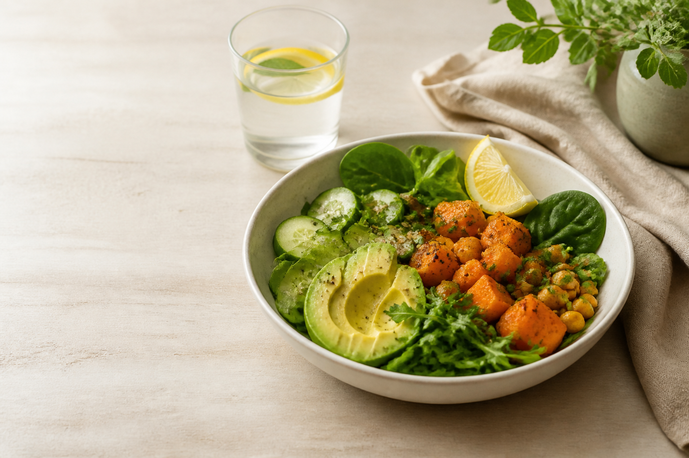

Вы часто чувствуете усталость, даже если спали
как пример
Питание, которое возвращает энергию, лёгкость и контакт с телом
Я помогаю женщинам выстроить питание без жёстких диет, срывов и чувства вины — через бережную диагностику, понятную систему и сопровождение.
Индивидуальные консультации, разбор рациона, программы восстановления и сопровождение до результата.
демонстрационный сайт
как пример
Вам может быть актуально, если
Тянет на сладкое или кофе
Питание стало хаотичным
Вес стоит или возвращается после ограничений
Есть отёки, тяжесть, вздутие
Вы знаете «как правильно», но не можете удержать систему
Хочется заботиться о себе без насилия над телом
как пример
Мой подход
Я не работаю через запреты и жёсткий контроль. Мой подход — питание как система поддержки тела, энергии и женского состояния.
Без диет и запретов
Не убираем всё «вредное», а смотрим, почему телу не хватает энергии, структуры и регулярности.
Через диагностику
Сначала разбираем питание, режим, самочувствие, привычки и образ жизни.
С учётом реальной жизни
Рекомендации подходят вашему графику, семье, работе и возможностям.
как пример
Форматы работы
От первой точки ясности до последовательной перестройки привычек.
01
Первичная консультация
Для тех, кто хочет понять, с чего начать.
Разбираем текущее питание, режим, самочувствие, энергию и привычки. После встречи у вас будут первые понятные рекомендации.
- Разбор питания и образа жизни
- Ответы на ваши вопросы
- Первые рекомендации

02
Разбор рациона
Для тех, кто «питается нормально», но энергии мало, вес стоит или тянет на сладкое.
Вы ведёте дневник, а эксперт анализирует рацион, режим, сочетания продуктов и интервалы между приёмами пищи.
- Анализ рациона
- Разбор пищевых привычек
- Индивидуальные рекомендации
03
Сопровождение на 4 недели
Для тех, кто хочет встроить питание в реальную жизнь.
Постепенно выстраиваем режим, корректируем рацион, убираем хаос и работаем с привычками без перегруза.
- Индивидуальный план питания
- Регулярная поддержка
- Корректировки и контроль
04
Программа восстановления энергии
Для тех, кто хочет глубже изменить питание, режим и отношение к телу.
Смотрим на питание шире: рацион, режим, сон, стресс, тягу к сладкому и эмоциональные переедания.
- Комплексный подход
- Работа с питанием и режимом
- Поддержка на всех этапах
как пример
Как проходит работа
Заявка
Вы оставляете заявку, и мы уточняем ваш запрос.
Анкета / дневник
Изучаю питание, режим и самочувствие.
Встреча
Разбираемся, что происходит и с чего начать.
Индивидуальный план
Вы получаете понятные шаги без перегруза.
Поддержка
Отслеживаем изменения и адаптируем рекомендации.
как пример
Обо мне
Я — Эксперт в области питания и пищевого поведения. Помогаю женщинам выстраивать питание без крайностей: когда забота о теле не превращается в контроль, а рекомендации можно встроить в обычную жизнь.
В моей работе важно не только «что вы едите», но и почему питание становится хаотичным, где не хватает энергии, как устроен ваш режим и что мешает телу чувствовать себя легче.
◇ Образованиев области питания
♙ Индивидуальный подходк каждой клиентке
⌾ Опыт работыс женщинами 30+
♡ Бережноесопровождение
как пример
С чем я работаю
Усталость и нехватка энергииТяга к сладкомуПереедания и срывы
Хаотичное питаниеОтёки и тяжестьВосстановление режима
Питание при высокой нагрузкеМягкое снижение весаПитание без чувства вины
как пример
Результаты, к которым мы идём
Вы понимаете, как питание влияет на ваше состояние
Становится легче выбирать еду
Появляется структура питания
Появляется больше контакта с телом
Снижается хаос и чувство вины
Уходит сценарий «сорвалась — начала заново»
Питание становится частью заботы о себе
Результаты индивидуальны и зависят от исходного состояния, образа жизни и регулярности выполнения рекомендаций.
как пример оформления отзывов
Отзывы
“Раньше постоянно срывалась на сладкое вечером. После работы с экспертом поняла, что днём недоедала и жила на кофе. Стало спокойнее и легче.
“Ушла усталость и тяжесть после еды. Появилась структура питания, и стало проще заботиться о себе, а не обвинять себя.
“Сопровождение помогло менять привычки постепенно, без жёстких диет и ощущения, что я снова «начинаю с понедельника».
демонстрационный сайт
Не нужно начинать с диеты
Можно начать с понимания, что именно сейчас нужно вашему телу.
Оставьте заявку, и мы подберём формат работы: консультацию, разбор рациона, сопровождение или программу.
Записаться на консультацию